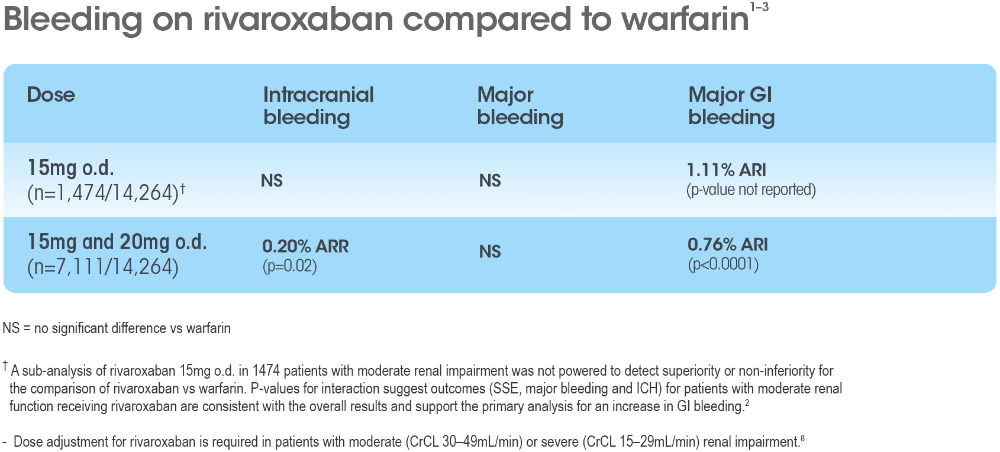

Please note that these data are not from a head-to-head trial
Rivaroxaban 15mg and 20mg o.d.: bleeding outcomes1,3
PRADAXA® 110mg
APIXABAN 2.5mg
RIVAROXABAN 15mg
INTRA-CRANIAL
0.20% ARR 33% RRR (p=0.02)
MAJOR
0.20% ARI 4% RRI (p=ns)
MAJOR GI
0.76% ARI 66% RRI (p<0.0001)
W
References: 1. Patel MR, et al. N Engl J Med 2011; 365:883–91. 2. Fox KAA, et al. Eur Heart J 2011; 32:2387–94. 3. Sherwood MW, et al. J Am Coll Cardiol 2015;66(21):2271–81. 4. Connolly SJ, et al. N Engl J Med 2009; 361:1139–51. 5. Connolly SJ et al. N Engl J Med 2010; 363:1875–6. 6. Connolly SJ, et al. N Engl J Med 2014; 371:1464–5. 7. Boehringer Ingelheim. Pradaxa® 110mg hard capsules Summary of Product Characteristics. 8. Bayer. Xarelto® 15mg film coated tablets Summary of Product characteristics.

Rivaroxaban 15mg o.d.: stroke outcomes2
Rivaroxaban 15mg o.d.
ISCHAEMIC
0.20% ARI 11% RRI
HAEMORR- HAGIC
0.23% ARR 44% RRR
STROKE/SYSTEMIC EMBOLISM
0.45% ARR 16% RRR
HR 1.11 (0.71–1.73)
HR 0.56 (0.21–1.51)
HR 0.84 (0.57–1.23)
Pradaxa® 110mg b.d.4–6,7
ISCHAEMIC
0.14% ARI 13% RRI (p=ns)
HAEMORR- HAGIC
0.26% ARR 69% RRR (p<0.001)
STROKE/SYSTEMIC EMBOLISM
0.18% ARR 11% RRR (p=ns)
W
Please note that these data are not from a head-to-head trial